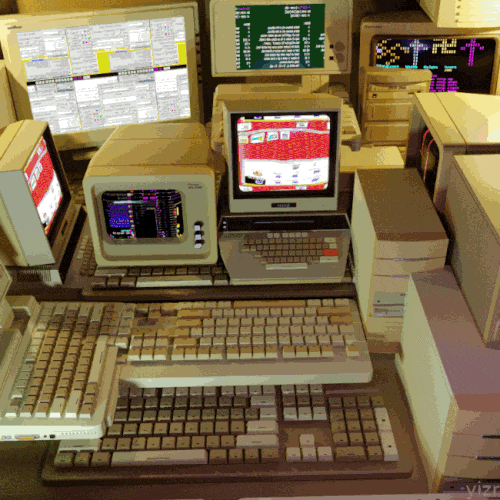
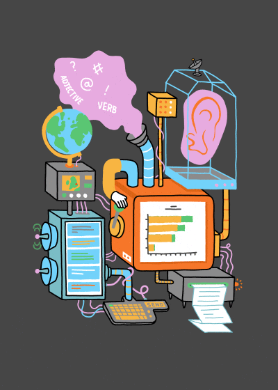
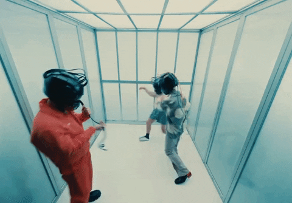
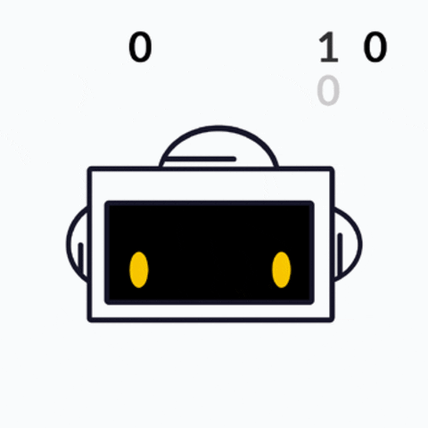
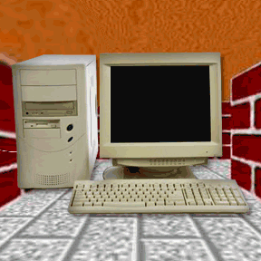
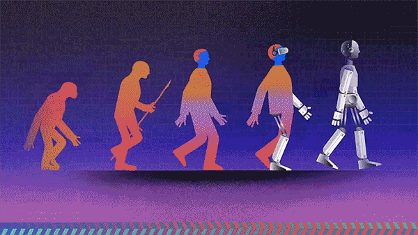

programa
const programa = { titulo: "Ingeniero de Sistemas", modalidad: "Presencial", jornada: "Diurna", duracion: 10, // semestres creditos: 178, snies: 52384, creacion: Acuerdo 16 del 26 de agosto de 2004, registro: 001562 del 16 de febrero de 2022, lugar: "Florencia - Caquetá, Campus Florencia" };
propósito_de_formación
El Programa Ingeniería de Sistemas de la Universidad de la Amazonia, tiene como principal propósito, desarrollar procesos de formación integral de profesionales de la Ingeniería de Sistemas, mediante el desarrollo de un currículo que aborda los conocimientos propios de las ciencias básicas, la ingeniería, el campo tecnológico, investigativo, socio-humanista y de formación complementaria, que le permitirá ser capaz de interactuar con su entorno e incidir positivamente en él, mediante la creación, innovación y aplicación de soluciones computacionales soportadas en las Tecnologías de la Información y la Comunicación, que contribuyan al fortalecimiento y progreso económico, social, tecnológico y sustentable de la región Amazónica y el país.

misión_y_visión
// Misión
El programa académico Ingeniería de Sistemas de la Universidad de la Amazonia, asume como encargo social la formación de profesionales íntegros, con capacidad para crear, innovar, formular y solucionar problemáticas organizacionales y productivas, apoyados en el desarrollo de sistemas de información soportados en las diferentes tecnologías informáticas, con el propósito de contribuir al desarrollo social, económico y tecnológico de la región amazónica y del país.
// Visión
Ingeniería de Sistemas será un programa académico en permanente acreditación académica y social, líder en la formación integral de profesionales, competentes en el campo académico, investigativo y humanístico; comprometidos con el desarrollo tecnológico de la región amazónica y del país apoyados en tecnologías de información.

perfil_de_egreso
El Ingeniero de Sistemas de la Universidad de la Amazonia es un profesional que comprende las dinámicas del entorno, reconociendo las implicaciones y las responsabilidades legales, profesionales, éticas, sociales, económicas y culturales del ejercicio de su profesión. Así mismo, reconoce que la evolución constante de su disciplina y las condiciones cambiantes del entorno hacen necesario implementar estrategias autónomas de aprendizaje continuo, orientados a su perfeccionamiento profesional.

plan_de_estudios
Acuerdo 44 del 02 de diciembre de 2020 - Por el cual se aprueba el nuevo plan de estudios y el plan de transición del programa académico de Ingeniería de Sistemas.

requisitos
Consulta los requisitos de admisión en la Dirección de Admisión, Registro y Control Académico.
inversión
Valor inscripción: 8.0% del S.M.M.L.V. — Acuerdo 02 del 26 de enero de 2012
Valor derecho de matrícula: Acuerdo 01 del 26 de enero de 2012

contacto
# Coordinadora de Programa nombre Paula Andrea Chica Murcia teléfono 320 454 1936 correo pisistemas@uniamazonia.edu.co ubicación Florencia - Caquetá, Campus Florencia, barrio El Porvenir, bloque administrativo, primer piso.

Universidad de la Amazonia · Florencia, Caquetá
> Ingeniería de Sistemas
Formamos ingenieros que crean soluciones computacionales para la región amazónica y el país.
